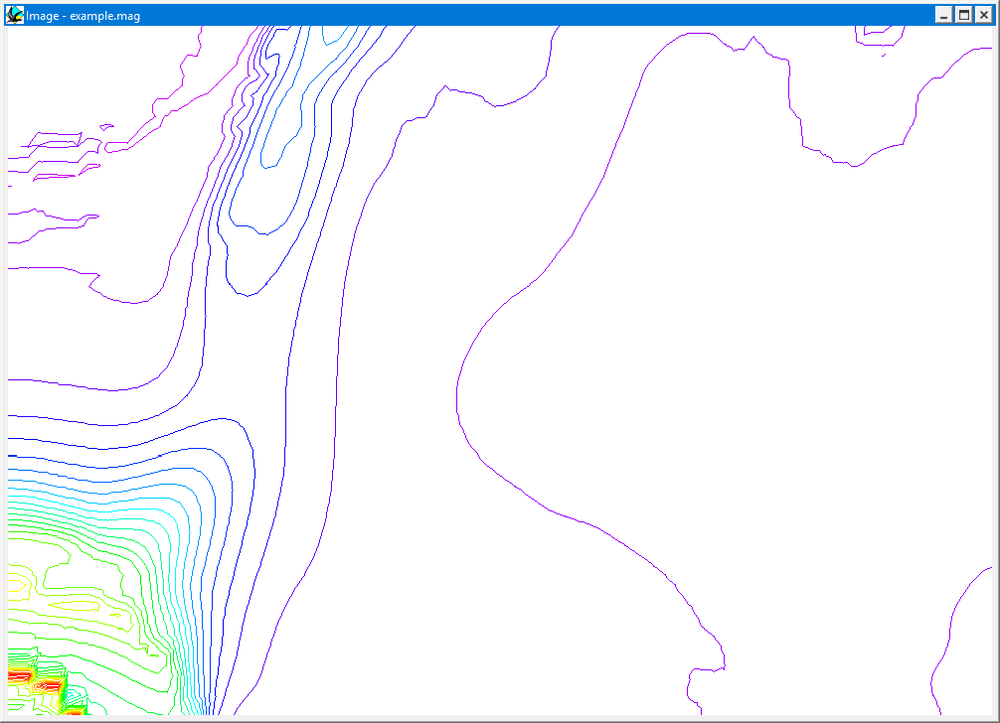
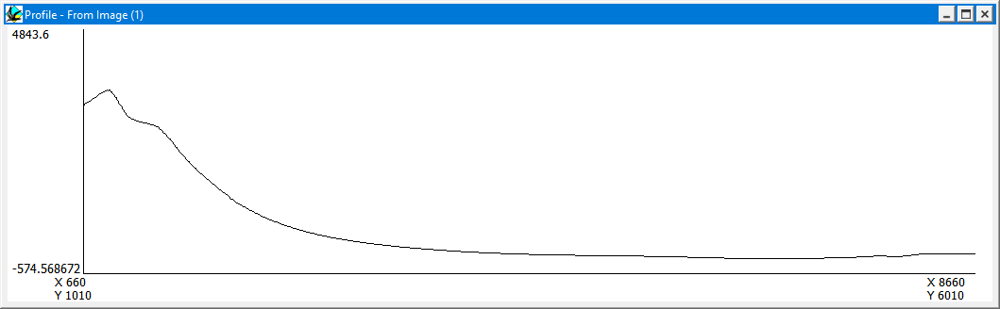
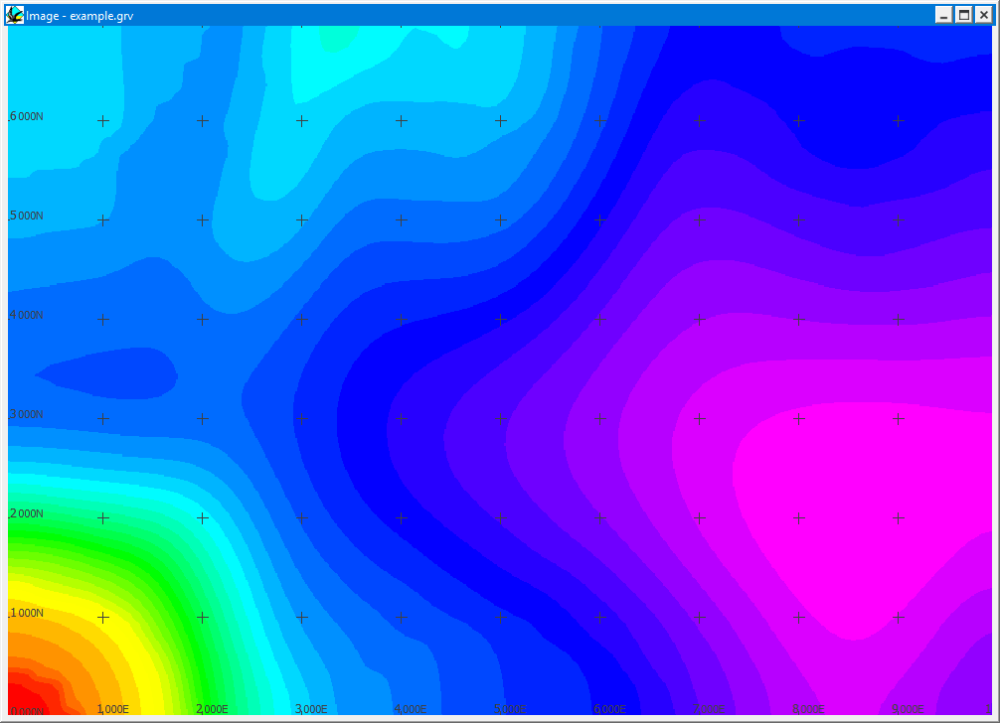
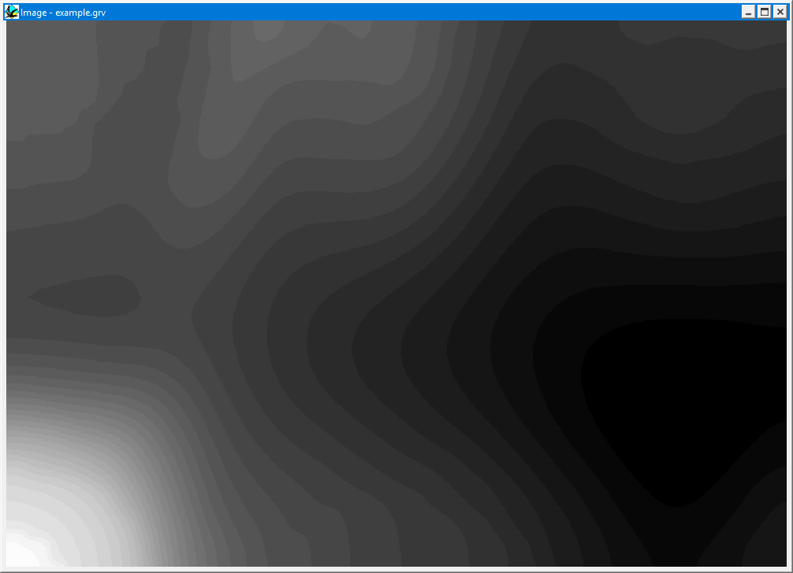
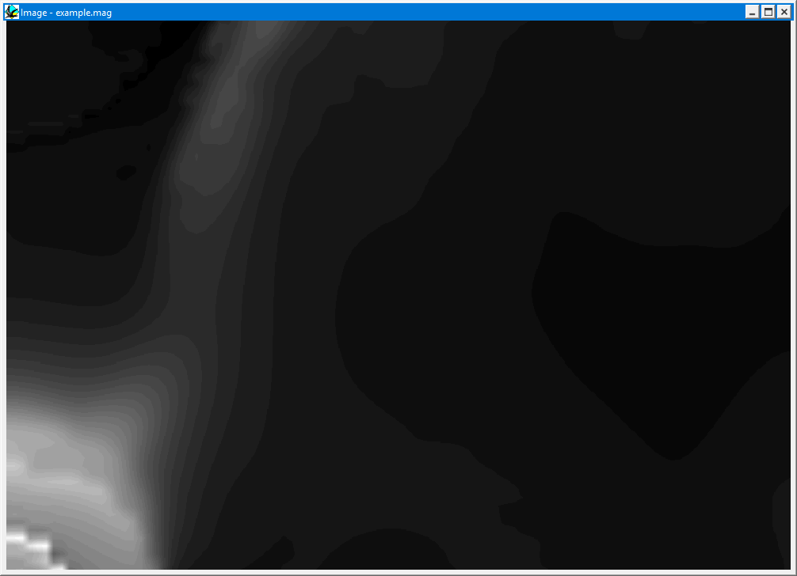

Images and profiles
As soon as an anomaly map has been calculated, grey scale images of gravity and magnetic anomalies will be automatically displayed. Images may also be loaded in from previous calculations, using the Display Image menu items from the Geophysics menu. The spatial scaling of the image is dependent on the Geophysics Image Scaling Option from the Geophysics Display Options Window, and is performed as a bilinear interpolation.
The image as displayed extends from the extreme survey locations, which will be 1/2 a cube width inset from the block model positions defined in the Block Options Window.

This window allows a certain level of interactive response:
Profiles:
In order to display a profile of any section within this image, simply click down and drag the mouse while the cursor is over the image. This will produce a "rubber band" line showing the profile position.
Once the mouse button is released, a profile line will be interpolated from the underlying file. These profiles are scaled to the currently selected image range.

If the shift key is held down during this operation the line defining the profile position will be left on the image together with the number of the profile.
Image Display Options: If the right mouse button is clicked in this window, the Display Plot Options window appears, and the following changes can be made:
- the range and display type can be altered (grey scale, rainbow LUT or colour contour)
- the LookUpTable scaling can be switched between Absolute range limits and a Max-Min % Clip
- a located grid can be superimposed on the image
- the locations of the calculations can be superimposed on the image
In the image below a 1000m grid (black crosses) and the locations of the sensors (grey circles) are overlain over a rainbow look up table image clipped at 10% and 80% of the total range.



Noddy · open source under the MIT licence · Loop3D/noddy_qt